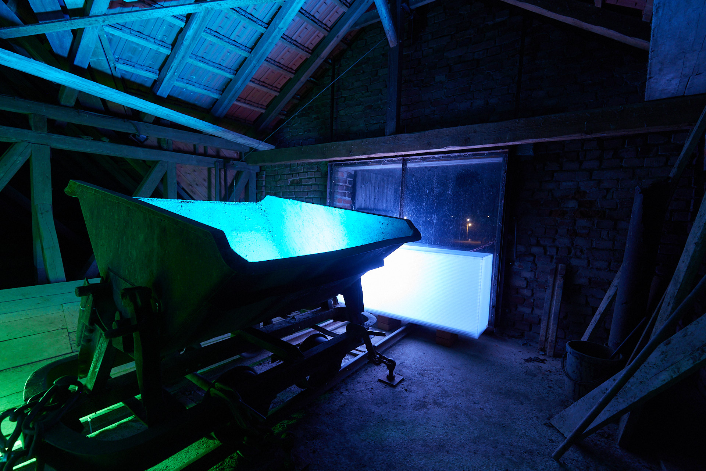
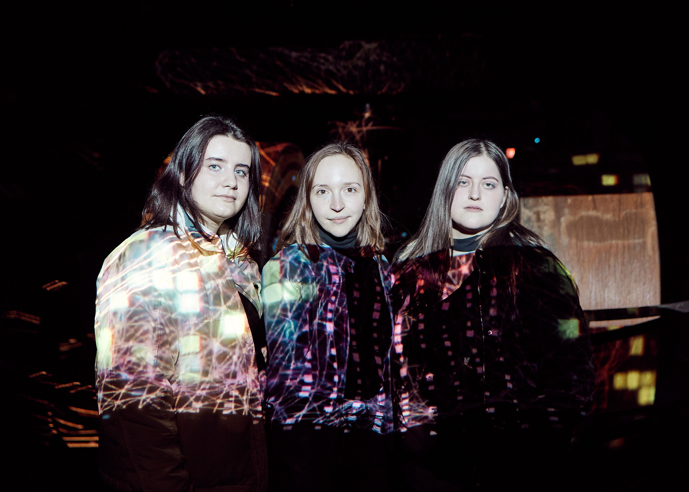
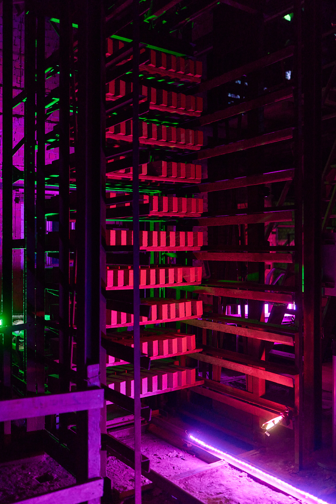

The automation of work, the digitization of our lives. Computers do almost everything for us. How do machines communicate with each other?
The pan mill, the main machine in the room, served as a grinder for the clay to be processed for the bricks and is recontextualized by the projected animations and used as the main projection surface.
The metaphor of the Dark Factory - the deserted factory - an image of the future that already seems to be reality today, continues to advance. Machines will increasingly displace mankind from professions for which society no longer finds any use. The future of work will be determined by the social impact of digitization.
The old brickworks in Lage - today an industrial museum - is special in its experience as a media space, since this factory already represents a dark factory in a broader sense. Suppressed by technical progress and automation, it is no longer in operation and is a reflection of the past. By projecting a future perspective of work onto the environment of a disused industry, the Alte Ziegelei awakens in the digital age and becomes a smart factory.
Design decisions had to be made based on the presented forms of data and pulse transmission. As already explained, the machine language is not linear and follows differentiated rules with its different types. In order to bring these different programming languages into a uniform one, the computer first runs them through a compiler. We have therefore consciously decided against man-made code in all its forms. We deliberately avoid numbers, diagrams and other text-based animations. The machine is made up of code; the essence, what really defines the behaviour and style of communication between machines, is more likely to be found in concepts of theoretical computer science (Turing machine, automata, graph theory, etc.). That's why we decided to use abstract forms in the design. We see dots, squares and other geometric shapes. They network, flash, move in virtual space or change colour. Logical, analysing operations and processes that take place between machines or machine components. They pull themselves over the components of the edge mill. Information pops up and closes again. The flow of information; Data streams are forwarded. The entertainment - the machine party - is primarily created by the different tempos and spatiality in the movement and the autoreactive or -sensitive reaction of the individual animation elements. It is precisely this informal, non-linguistic way of communicating that creates a tense narrative that programming languages could not achieve.

Der Kollergang


REGINA, FIONA & KATAH


Exhibiton
Excerpt from the concept
Credits
Idea: Fiona Giljohann
Conception: Fiona Giljohann, Regina Herdt, Katharina Meyer
Concept design: Katharina Meyer, Fiona Giljohann, Regina Herdt
Animation: Katharina Meyer, Regina Herdt, Fiona Giljohann
3D: Fabian
Storyboard & Animatic: Katharina Meyer
Sound: Fiona Giljohann, (Fabian Tellbroeker), Antonia Schmidt
Light: Fiona Giljohann
Technology: Fiona Giljohann, Regina Herdt, Katharina Meyer, Rafael Torezo, Kim Groche, Benjamin Hohenheiser
Photography: Regina Herdt, Rafael
Videography: Fiona Giljohann, Rafael
Layout: Fiona Giljohann
Editing: Katharina Meyer
Logistics: Regina Herdt
Organization: Fiona Giljohann, Katharina Meyer
Supervisor: Claudia Rohrmoser
Location: LWL Industriemuseum Minden Alte Ziegelei
Collaboration: Futur21
Sponsors: Futur21, LVR,